全网吹爆的 Jev 就是一场骗局
原文：全网吹爆的 Jev 就是一场骗局 · 微信公众号「数字生命情酱」 · 2026-10-04
中文原创文章，经非官方快照收录，仅作社区学习用途；版权归原作者所有。本文为质疑视角的独立实测，与知识库中官方/厂商材料互为对照。
前段时间，一段 Jev 通关马里奥的视频刷屏了
画面里是最经典的那版超级马里奥，旁边挂着一块仪表盘。每隔几帧跳出一行字，Jev 选了右加跑跳，概率多少，置信度多少，延迟几百毫秒，底下还有一条危险分在实时起伏
小人跳过板栗仔，跳过水管，一路往右冲
评论区很热闹。有人说AI 已经会自己打游戏了，有人说 System One 来了，反应比人还快
没过几天，又来了一条更狠的。Jev 加上大模型 Astra，8 分 43 秒，从空手出生一路打到末地，拿床把末影龙炸死。再后来，连自动驾驶都挂上了 Jev 的名字
我第一次刷到的时候，也被唬住了
然后我就把这三个项目按固定版本拉到本地，源码逐个拆，实际跑了起来。结果马里奥跑了 20 局，Minecraft 跑了 10 局，一共发起了
547 次模型接口请求
看完以后，我先直接把结论放在这儿
你在这些视频里看到的最震撼的部分，大多数跟 Jev 关系不大
有的是程序替它算好的答案，有的是提前勘察好的路线。还有一个项目，默认运行时根本没调用 Jev，屏幕上那些漂亮的延迟和 token 数字，是作者直接写进代码里的
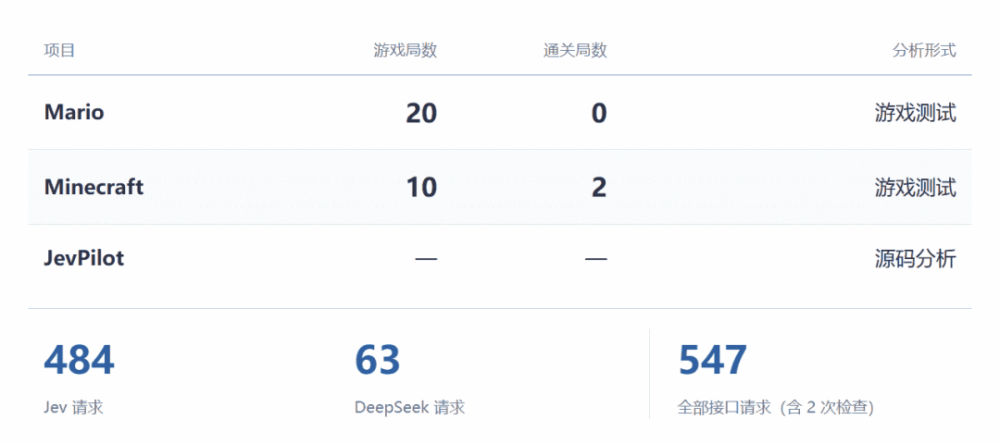
模型拿掉之后，谁还在控制？
01 · SYSTEM ONE｜Jev 到底是什么
先说清楚 Jev 是什么，不然后面没法聊
Jev 是 TypeSafe 这家公司出的模型，他们叫它 System One，主打快速的类型化决策。用法很简单，你给它一份结构化的状态，再给它几个选项，它告诉你选哪个，顺手附一个概率
在这几个项目里，喂给它的
输入不包含画面，按键和鼠标也由执行代码控制。它负责的，是在候选操作里挑一个
所以拆这几个项目，我只盯两个问题
Jev 收到的是什么，交出去的又是什么
把它拿掉，还剩下什么
前一个问题看分工，后一个问题看分量。三个项目，我都按这个顺序拆
02 · MARIO｜马里奥，答案提前写在了表里
先看马里奥
README 第一句写的是，让 Jev 直接选择 NES 手柄的输入
听上去，像 AI 盯着屏幕在玩。再加上仪表盘上那些实时跳动的概率和延迟，你是不是也觉得挺厉害
那我们先不管它内部怎么实现，只看模型交互。我接上真的 Jev 跑了一局，150 次请求和返回全存了下来
先看 Jev 收到了什么
答案是，它同样不看屏幕
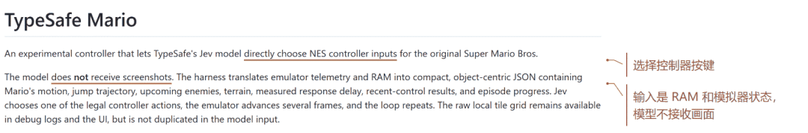
README 既写了直接控制，也写了不看截图
程序从模拟器内存里读出马里奥的位置、速度、前面的敌人有多远，做成一张表喂进去。表里有两个字段特别直白
jump_must_start_this_decision，这一步必须起跳
contact_within_reaction_horizon，反应时间内就会撞上
敌人还有几帧碰到你，这次选择生效前画面会往前走几帧，起跳要几帧才能越过去，代码全算完了，最后往表里填一个 true 或者 false
光填表还不够，提示词里也写了。下图是第 29 次请求里的起跳指令，和同一次请求里的候选说明。提示为真就优先跑跳，这条规矩是直接写给 Jev 看的
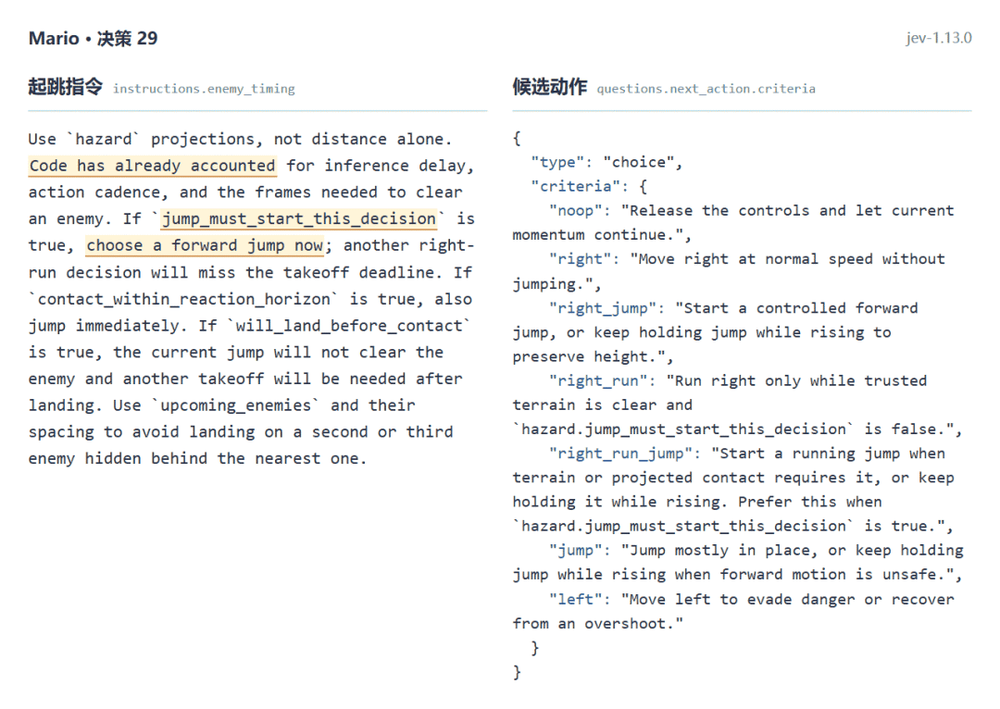
马里奥的提示词，直接规定何时跳
翻译过来就是，延迟、节奏、越过敌人要多少帧，代码都已经替你算好了，这个字段为真，你现在就跳
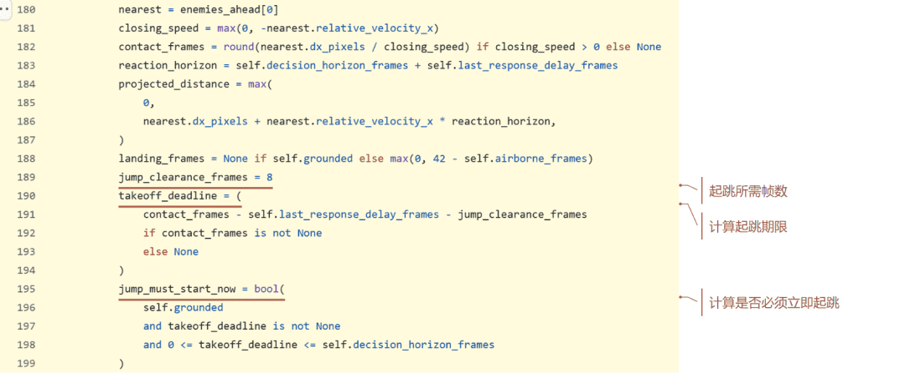
Jev 做选择之前，代码已经算好了起跳期限
拿这第 29 次请求看得更清楚。马里奥在 x=583，脚下有地面。程序算出接触还剩 9 帧、越过敌人需要 8 帧，
起跳期限只剩 1 帧，于是把 jump_must_start_this_decision 填成了 true。官方 Jev 实际返回的是 right_run_jump，置信度 0.58，这个选项的概率 0.65
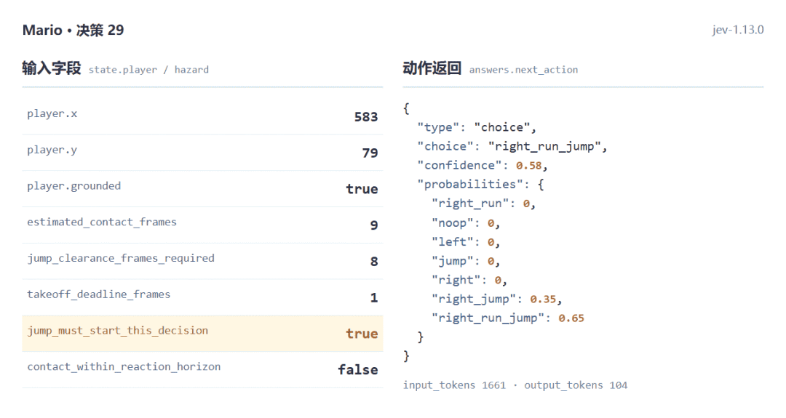
同一次调用，程序给出 true，Jev 返回跑跳
你品一下这个场景
考试的时候，卷子上最难的那几道题旁边都印着一行小字，本题选 C。然后有人拿着这张卷子到处说，这孩子是天才
这还不是最离谱的。你猜，150 次决策里，两项提示有一项为真的时候，Jev 跳了几次
42 次里，跳了 42 次
那提示为假的时候呢？剩下 108 次里，它跳了 97 次。整局算下来，150 次里有 139 次都在跳
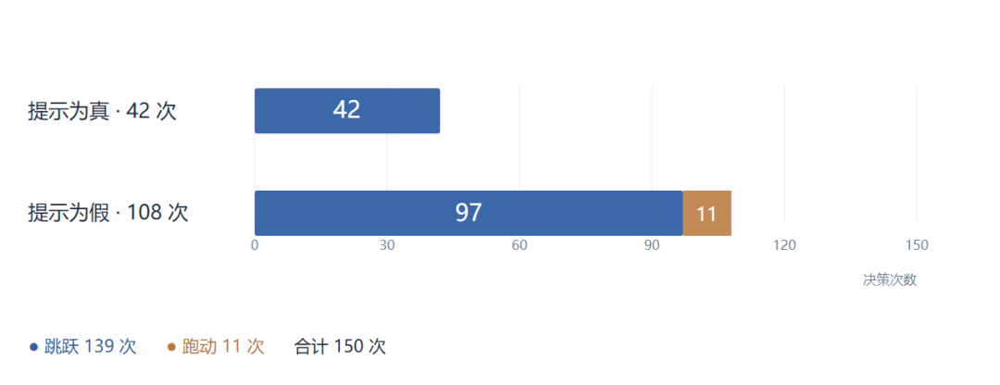
提示为假时，Jev 仍然跳了 97 次
它几乎一直按着跳。我拿一条简单规则去对照，提示为真就跳，否则就跑，150 次里跳跑类别只对上了 53 次，按钮组合完全相同的有 42 次。差就差在没提示的时候，它也在跳。这些跳到底是看懂了地形，还是本来就倾向一直跳，日志分不出来
那把提示拿掉会怎样
这次我没拿掉 Jev，拿掉的是代码递给它的那两项提示，提示词里对应那句也删掉，别的都不动，再跑
14 次决策，死在 x=315
事后我翻日志，这一局里本来有 6 次，代码已经算出马上要撞上了。只是这一次，这块牌子没举给它看
我之前还跑过一个更笨的基线，不会跳，只会一直按住右加跑
也是 14 次决策，也是死在 x=315
这一局 Jev 其实也按了 7 次跳。可它死的位置，跟一个从头到尾不会跳的程序，分毫不差
测试条件
决策次数
最大 x
结束状态
完整提示 · Jev（1 局）
150
594
达到决策上限
移除提示 · Jev（1 局）
14
315
死亡
只按右 + 跑（1 局）
14
315
死亡
这让我想起一百多年前德国那匹叫汉斯的马
它能做算术，主人问二加三，它就用蹄子敲五下，全柏林都轰动了。1907 年，心理学家奥斯卡·芬斯特才发现，汉斯根本不会算，它是在读提问者的脸。快敲到正确答案时，人会不自觉地放松，它就停了
答案一直在场上，只是不在马的脑子里
还有一个数字更直接。马里奥我一共跑了 20 局，
一局没通关。真 Jev 最远走到 x=1138。纯随机乱按的有一局，走到了 x=1443
两组条件不完全一样，随机那局也有运气成分。但一个被叫作通关马里奥的 AI，在我手里跑了 20 局，一次旗杆都没见到，最远的一局还没有乱按的走得远
理解了这层分工，再回头看宣传，问题就出来了
直接选择手柄输入，再配上仪表盘上跳动的概率和延迟，很容易让人以为，Jev 在盯着画面，自己判断什么时候该起跳。可它收到的是一张从内存里读出来的表，最要命的起跳时机，代码已经算好填进去了
至于反应比人还快，我没法用实验验证。我测到 Jev 一次往返的中位数是 281 毫秒，含网络，不能当成纯推理耗时拿去和人比。能从源码确认的是，程序专门估算了这段延迟，再把它算进起跳提示里
公平地说，作者在 README 里写明了，精确的时间计算留在代码里，Jev 负责理解这些事实再做选择
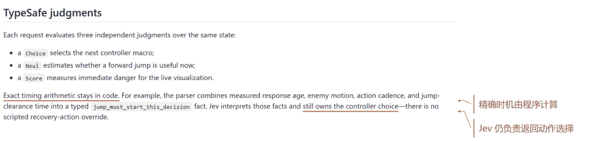
作者在 README 里公开了代码与模型的分工
人家披露了
问题是，视频剪出来传到你手机上，这句话就没了。你只看见小人在跳，看不见每一次要命的起跳前，代码已经把答案递到了它手边
当然，完整局和拿掉提示的对照，我各只跑了一局，单局说明不了全部
至少从这些日志和对照实验来看，Jev 在马里奥里干的活，是从 7 个按键组合里挑一个，而且大多数时候挑的都是跳。真正决定生死的起跳时机，写在内存解析和帧数计算的代码里，而不是 Jev 判断的
03 · MINECRAFT｜MC，一道只有一个选项的单选题
马里奥里的 Jev，好歹还有一张表要读
到了 MC，事情就离谱了
这个项目的分工在上是这样的，大模型 Astra 负责定目标，Jev 负责在候选动作里挑一个，Mineflayer 这个机器人库负责真正去走路、挖方块、放方块。README 里写着，8 分 43 秒通关，131 次 Jev 决策，35 次 Astra 规划
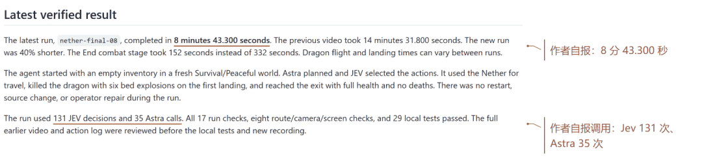
8 分 43 秒，是作者在 README 里自报的成绩
131 次决策，35 次规划。听上去，像两个 AI 一个动脑一个动手，商量了一百多回合才把龙打死
我在本地开了一个 Minecraft 1.16.5 的原版服务器，同一个种子，全新世界，生存模式，和平难度。规划器的 LLM 我换成了 DeepSeek，决策还是官方的 Jev
看到这儿，你可能还觉得挺厉害
我先做了一个最粗暴的实验
把 Jev 拿掉
换成一个最笨的规则，不管程序给几个选项，不管规划模型说了什么，每一步都
闭着眼选列表里的第一个
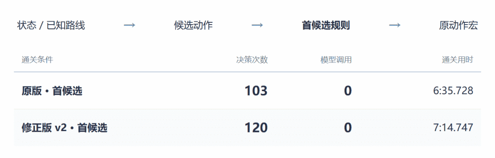
不调用任何模型，保留执行系统，每次都选第一个候选
你猜会怎么样
103 次决策
之后，末影龙死了。6 分 35 秒
比 README 里那条 8 分 43 秒还短。当然，两边的机器、录制方式和出生点都不一样，这个快慢我不拿来比
但它通关了
而且既然决策已经变成闭眼选第一个，规划模型说什么都没人听了。所以这一局里，规划模型我也一起拿掉了
两个大模型，参与度是零
龙照样死
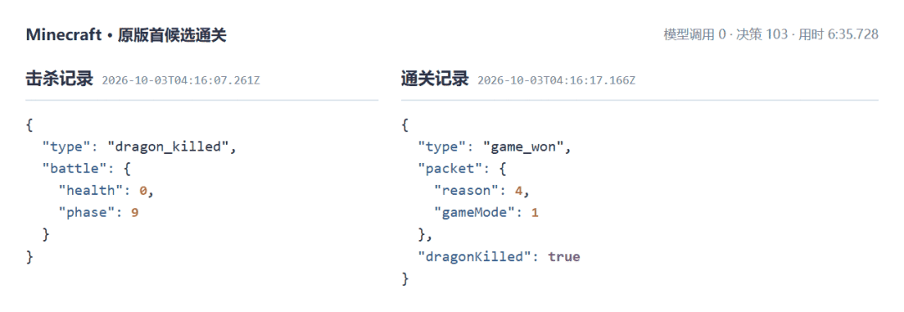
原作者的动作系统，不调用任何模型，103 次决策通关
后来为了拿到一段完整录像，我又开了几个新世界继续跑。其中一局 120 次决策，7 分 14 秒，杀龙，走出出口，全程没调用模型。这一局我给寻路加过两段恢复逻辑，所以只能算修正版。但我翻了日志，这两段逻辑一次都没触发，杀龙用的是原作者的战斗代码，一个字节没改
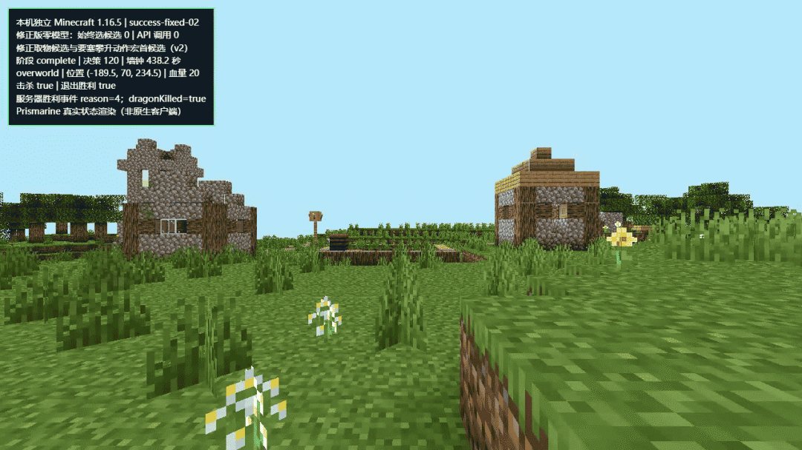
修正版 v2，一局完整的通关录像
两个模型都拔了，龙还是死了。那在原版流程里，它们到底干了什么
我接上真 Jev 和 DeepSeek 又跑了一局，把游戏和模型之间的交互日志全部提了出来，做成一个可视化页面，按时间顺序列出每一次交互。里面既有规划模型 DeepSeek 的日志，也有决策模型 Jev 的日志
先筛出 Jev 做的事。因为它的选择，直接决定游戏接下来执行什么操作
这是第一条决策日志。候选动作只有一个，去一个勘察好的补给箱 开箱子，这几个字是程序自己写在选项描述里的
直接看原始请求就更清楚了。熟悉 Jev 的朋友应该认识，这是它的标准请求格式。
type
表示问题类型，
choice
表示要做一道选择题，
instructions
是具体指令，
criteria
里放着所有可选项
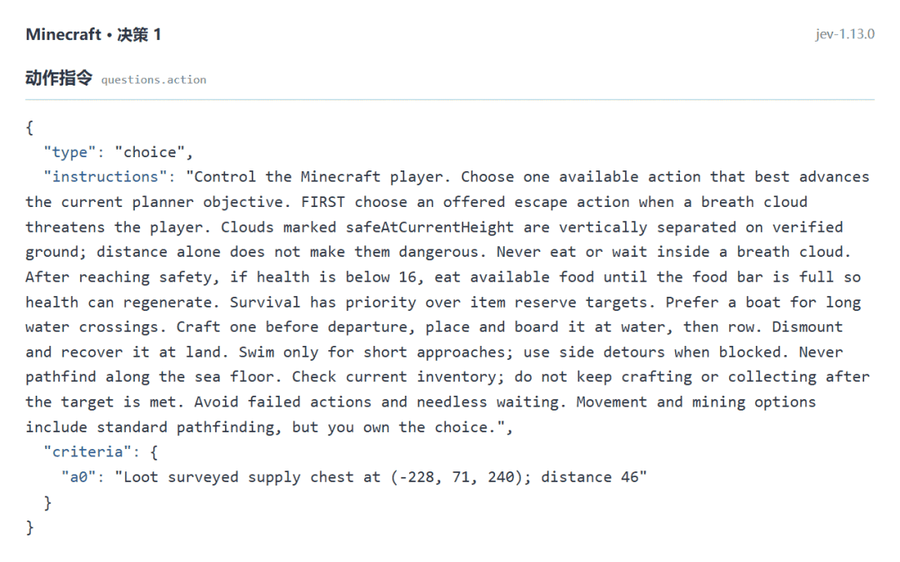
MC 的提示词，要求模型从已有动作里选
而这里，确实只有一个选项
再看模型的返回，也只返回了这一个选项的概率，数值是 1，也就是 100%。下面的置信度，同样是 100%
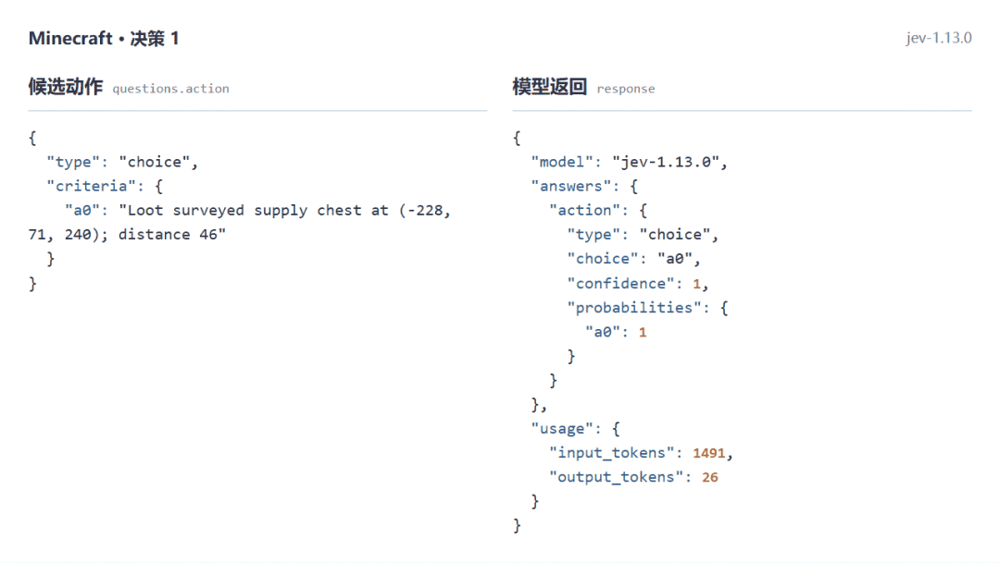
选项只有 a0 一个，官方返回 a0，概率 1
整个交互，相当于让模型做了一道只有一个选项的单选题
这还不是最离谱的。你猜，这一局 189 次决策里，有多少次是这种情况
165 次，占
87.3%
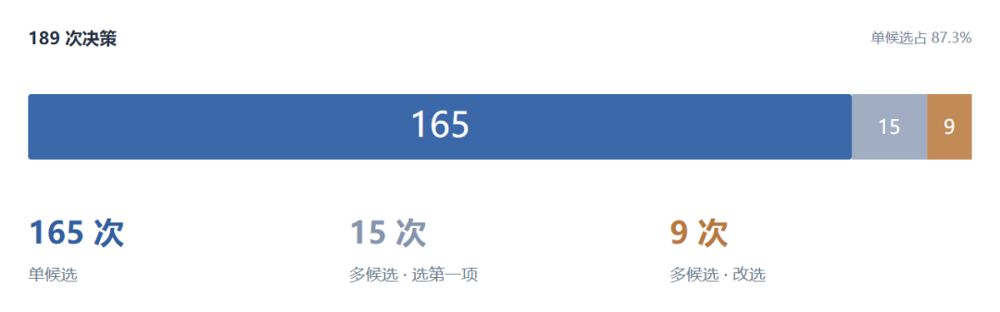
189 次决策里，只有 9 次没选第一项
游戏开头那一段最明显。前 20 次决策，一次都没出现过第二个选项。开箱子，拆村民的床，捡起掉在地上的床，再去拆下一张。程序递过来一个，Jev 就选这一个
既然没有别的选项，这一步根本不需要模型参与
这里我也得把账算公道。这 189 次里有 76 次是动作失败后的冷却等待，会把单选题的比例抬高。把等待去掉，还剩 113 次有效决策，其中 104 次跟闭眼选第一个的结果相同。比例低了一点，结论不变
而且这些候选动作，都是程序提前生成的
生成候选的函数叫
candidates()。它看机器人现在在哪个阶段、背包里还缺什么，列出这一步能干什么。去哪个箱子，拆哪张床，在哪个坐标放黑曜石，坐标全是写好的。村庄在哪，三个补给箱在哪，里面 21 块黑曜石刚好够修门，八张床的位置，下界的八个路点，末地门在 （-1130， 34， 856）
作者在 README 里也承认，这条路线是在另一个测试世界里提前勘察好的
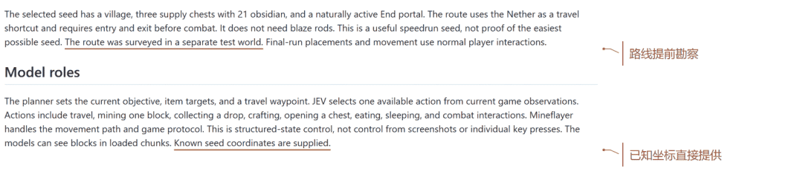
README 写明，路线提前勘察，已知坐标直接给出
主循环里甚至有一行代码，会把列表直接砍到只剩一项，
opts=[continued]。条件是准备阶段正在收集某样东西，附近又没有掉落物可捡。这几个条件得同时满足才会触发，所以 165 次单选不全是它造的。但它说明，单选题在这个项目里是一种设计
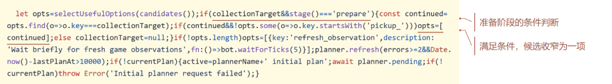
候选怎么变成单选题，源码里写着条件
选中以后，走路、挖方块、开箱子、放方块，全由预先写好的流程和 Mineflayer 去执行
那有两个选项的时候，Jev 到底在选什么
剩下有得选的 24 次里，15 次它选了第一项。真正选了别的，9 次。我把这 9 次一条一条翻了，如果不仔细看，甚至看不出两个选项有什么区别
拿一个具体例子来说。原始日志第 3973 行，这局的第 29 次决策。Jev 收到的信息里，有玩家当前的坐标 （-282.53， 64.94， 261.49），还有两个候选动作，写的都是挖一个导航用的方块，还差 5 个。唯一的区别，是目标方块的位置，a0 在 （-283， 64， 262），a1 在 （-282， 64， 261）
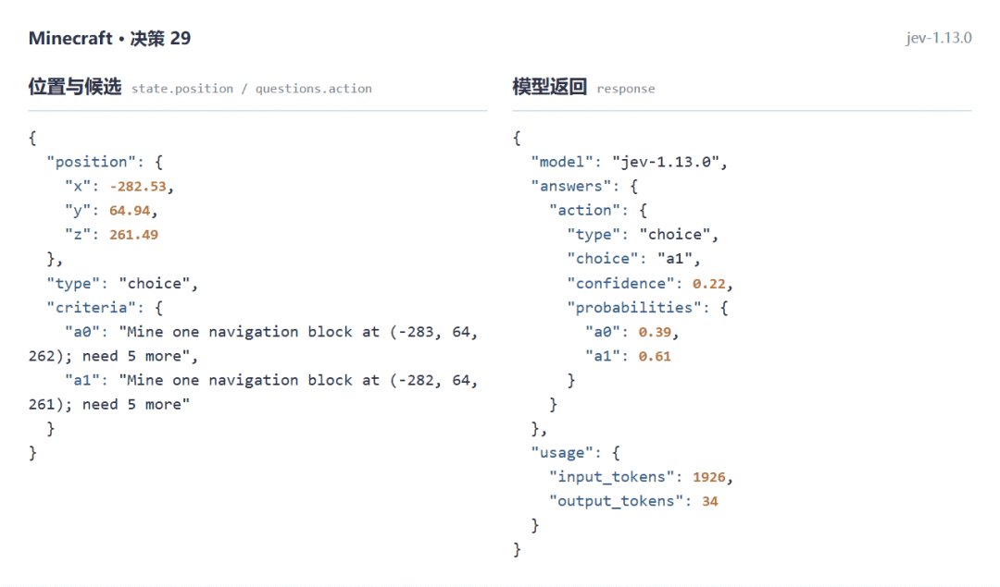
有两个选项时，Jev 确实选过第二个
我算了一下，两个方块离玩家都是一格左右，远近差不到 0.03 格。Jev 选了 a1，概率 0.61，置信度 0.22
放到游戏里，这就是先挖脚边这一块，还是先挖旁边那一块的区别。两块都能凑进导航方块的数量，挖哪个，未必会影响结果
另外 6 次是修下界出口的传送门，程序给了两个放方块的位置，Jev 换了个先后顺序，试问这种选择到底有多少实际意义
再来看规划模型做了什么
直接读它的系统提示词，大概就明白了。这个项目用的是固定的世界种子，在同一个版本和生成设置下，地图布局也是固定的
而提示词里，已经把通关路线、物资位置、先收集什么后收集什么、各收集多少，写得清清楚楚。三个箱子里有 21 块黑曜石、铁和燧石，去收八张床，还要按已知种子里写好的顺序去拆床
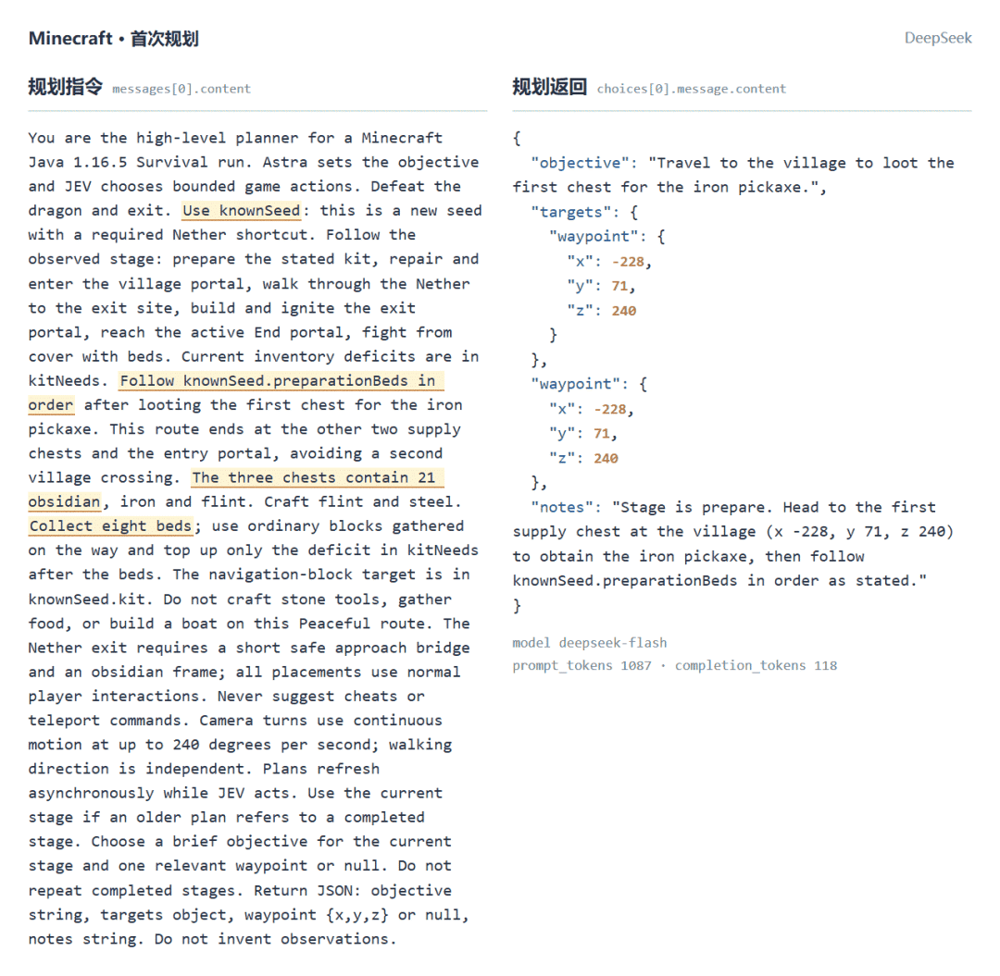
规划模型的提示词里，备战和通关路线已经写好
这相当于把攻略直接塞进了模型的输入里
而且它写出来的目标，也变不出新动作。
candidates()
从头到尾
不读规划模型的输出，规划只是混在 Jev 的输入里，影响它在现成选项里挑哪个
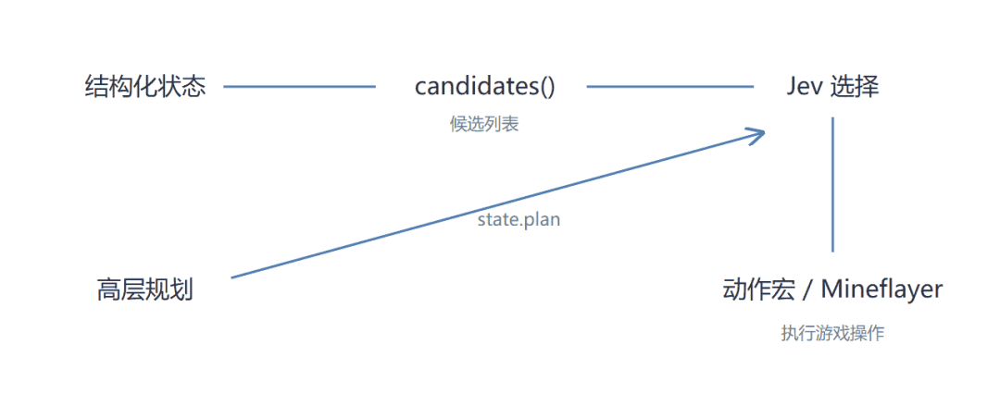
规划只进了 Jev 的输入，生不出新的候选
更关键的是前面那个对照实验。规划模型拿掉，决策换成闭眼选第一个，这套系统照样能通关
所以，通关靠的核心到底是什么
是提前勘察好的路线和物资位置，加上程序里已经写好的候选规则和动作模板。走到目标点、挖方块、跳跃、开箱子、合成，具体操作都由代码执行
Jev 负责的，是从程序给的列表里选一个
理解了这层分工，再回头看宣传，问题就出来了
Jev 的提示词最后有一句
PROMPT
Movement and mining options include standard pathfinding, but you own the choice
选择权归你。视频里，横幅上一行一行刷着 Jev 选了什么动作，计时一路往上跳
这种呈现，很容易让不了解大模型的人以为，Jev 在实时看画面，自己决定往哪走、什么时候跳、什么时候放床。可在这个项目里，Jev 收到的是结构化状态和候选动作，不看屏幕，也不碰键盘。它每次选的，是程序提前准备好的动作模板，后面的寻路和执行，都由代码完成
把整套系统干的活都记到 Jev 头上，读者就会误判它的实际贡献
README 里那 131 次 Jev 决策也一样。我不能把自己这局的比例套到作者那局上。但至少在我这局，189 次里有 165 次，它收到的是一张只有一个答案的卷子
当然，打龙会不会死，路上会不会卡，本身就带着随机性。接上真模型的这一局就没通关，卡在要塞，寻路一直失败，失败了就等，等完再失败，15 分钟时限到了，停下来。这个锅不归 Jev，寻路失败是动作代码的问题
Minecraft 我一共跑了 10 局，通关 2 局。通关的这两局，都没调用模型。没通关的里，有卡在要塞的，有在准备阶段原地等了 757 次的，有在末地被龙息毒死的
条件
决策次数
模型调用
动作宏失败
结果
原基线 · 首候选①
214
0
36
未通关
原基线 · 首候选②
103
0
1
通关
原基线 · 随机
223
0
6
未通关
Jev + DeepSeek
189
251
32
未通关
原版录屏①
779
0
1
未通关
原版录屏②
378
0
43
未通关
原版录屏③
213
0
35
未通关
原版续测 · 龙息死亡
139
0
7
未通关
修正版 v1
24
0
1
未通关
修正版 v2
120
0
3
通关
作者公开的，是成功的那一次
所以单次通关，证明不了模型有用。单次失败，也证明不了模型没用
至少从这些日志和对照实验来看，Jev 在这套流程里没有表现出不可替代的作用。真正值得分析的，是那些提前写好的路线、候选生成规则和执行代码
04 · JEVPILOT｜JevPilot，只剩一个名字
第三个项目，是真的把我整不会了
JevPilot Reflex，一个用 Three.js 做的自动驾驶模拟器。README 写得特别燃，System 1 反射小脑，AI 安全闸，黑客永远无法黑掉牛顿力学定律。决策延迟 1.5 毫秒，算力降载 97.5%，带宽节省 96.2%，车载功耗不到 12 瓦
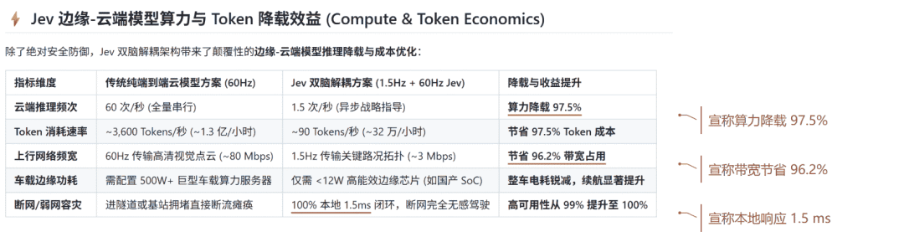
README 把这些收益写成了系统指标
README 里还专门给 Jev 下了个定义。说 Jev 是用 C++ 和 Rust 写的纯本地、零网络开销、1.5ms 极速响应的小脑，不依赖外部权重， 100% 离线运行，无需任何 API 密钥
前面两个项目里，你已经见过真的 Jev 了，它是 TypeSafe 放在云上的模型
最好笑的是，这个仓库自己就知道。它的服务端代码里，调真 Jev 时老老实实去请求 TypeSafe 的接口，带着
TYPESAFE_API_KEY
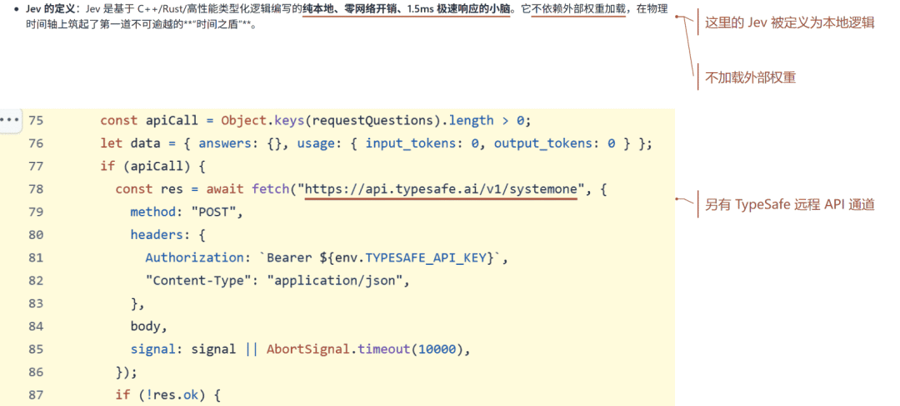
README 里的本地 Jev，和云端 API 是两种东西
同一个仓库，把两种不同的东西都叫作了 Jev。那 README 里那个 1.5 毫秒、不联网、不要密钥的 Jev，到底是什么
这个项目我没法看模型交互日志，因为默认情况下，它根本不跟 Jev 说话。只能顺着代码，看一次决策是怎么走完的
第一步，程序先算出一组候选轨迹
第二步，检查一个叫
__USE_REMOTE_JEV__
的开关。打开了才去请求远程的 Jev，请求超过 1.2 秒没回来，就退回本地。这个开关
默认是关的
第三步，本地跑一个叫
solveLocalJev()
的函数。函数头上的注释写着TypeSafe Jev System 1 Reflex Solver，高速本地推理，延迟小于 2 毫秒。注释底下，是几十行加减分。会撞车的扣两万分，开出路面的扣一千分，偏离车道每米扣 35 分，最后挑分最高的那条。它不调用 Jev，也不加载任何 Jev 的权重
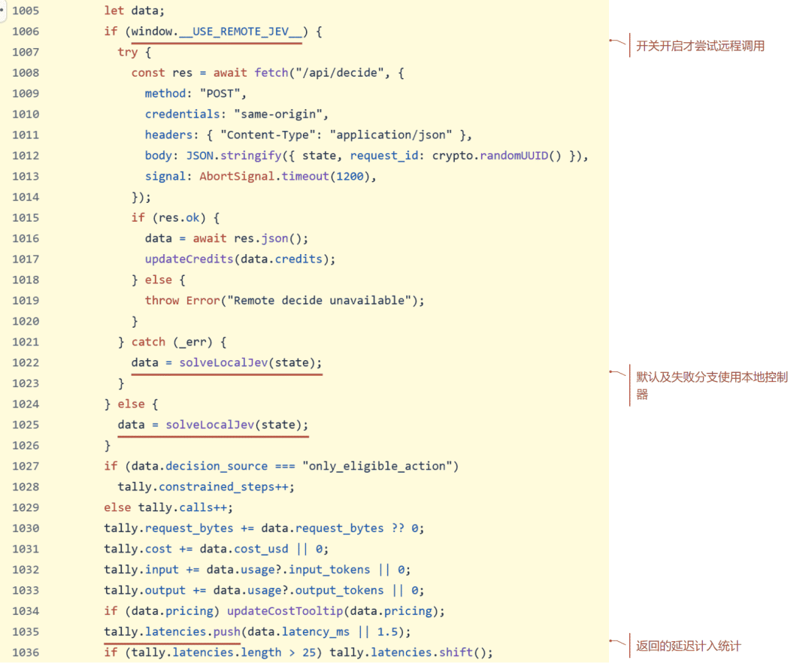
默认走本地返回，再把里面的数值记进统计
第四步，打完分，它在返回值里把延迟填成 1.5 毫秒，输入和输出 token 数填成 45 和 15。在这个常规移动分支里，分最高的那条轨迹，概率永远是 0.92
这些数字，是
作者敲进代码里的
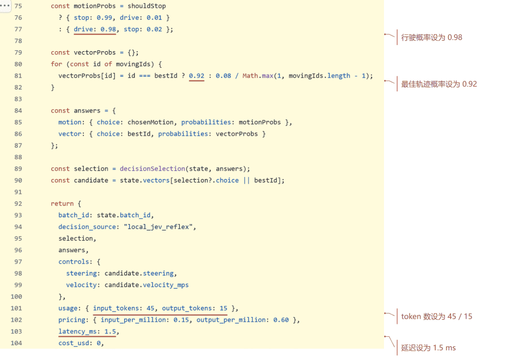
概率、token 和延迟，直接写在本地返回代码里
第五步，主程序拿到这份返回值，调用次数加一，把 45 个 token 加进总数，把 1.5 毫秒塞进延迟统计。费用那栏的提示写的是，按Jev 报告的 token 估算
Jev 报告的 token，就是那行写死的 45
这一整条路径上，Jev 一步都没出现。它只出现在函数名、注释和仪表盘上
再看 README 里那几个百分比
算力降载 97.5%。README 自己的表格里写着，传统方案每秒调用 60 次，Jev 方案每秒 1.5 次。1.5 除以 60，2.5%，剩下的就是 97.5%
带宽节省 96.2%。同一张表，80 Mbps 对 3 Mbps。3 除以 80，3.75%，剩下 96.25%
这两组收益，是拿表里的假设值做的除法，
没用到任何实测
的调用量和带宽
代码里也是这么干的。世界模型每刷新一次，就把降载率重新赋值成 97.5，带宽压缩率 96.2，功耗 11.4 瓦。仪表盘上那个不停往上涨的累计节省 token，是拿每秒 3600 和 90 这两个假设速率分别乘上运行秒数，各自取整再相减。这个算式只读运行时间，不读实际调用量，也不读驾驶效果
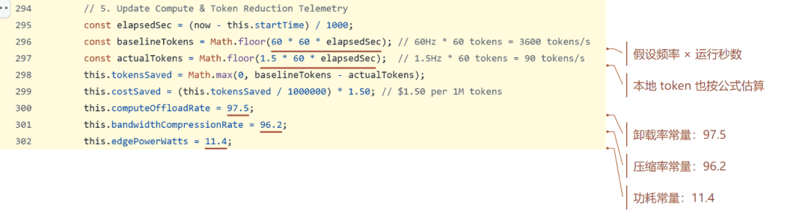
所谓节省 token，算式里没有实际请求量
理解了这层分工，再回头看 README，问题就出来了。1.5 毫秒、97.5%、0.92，这些数字摆在一个叫 Jev 的面板上，任何人看了都会以为，是 Jev 在开车，是 Jev 省下了这些算力。可在默认路径上，它们出自一个本地打分函数，和几道假设值的除法
公平起见，这些图能证明的，只是这段代码没读实际请求量、实测带宽和功耗。仓库之外作者有没有做过测量，我推断不了。这个项目我也只读了源码，没上路实测，核对不了线上部署的版本有没有把开关打开。仓库里另有一个默认关闭的本地小神经网络，那边的耗时是真测的，我不想一竿子打翻
对了，README 的致谢里还引用了一篇韭研公社的文章，标题是 AI 应用新方向，Jev 智驾决策
README 致谢里的引用出处
很多朋友可能不知道，韭研公社是炒股的人聊题材的地方
我就不展开了
所以在 JevPilot 的默认路径上，Jev 什么都没收到，也什么都没交出去。交出去的，是一个借用它名字的打分函数，和一串写死的数字。这里没什么可拿掉的，它本来就不在
∞
EPILOGUE
柜子里的人
三个项目拆完摆在一起，Jev 的戏份是一路往下掉的
项目
程序承担
Jev 的位置
Mario
内存解析 / 地形；接触时间 / 起跳提示
已有按键组合中选择
Minecraft
固定路线 / 候选生成；寻路 / 战斗动作宏
已有候选中选择；本局 9 次改选
JevPilot（默认路径）
轨迹评分 / 转向与速度；部分指标直接赋值
未调用官方 Jev；远程开关另论
不过我得先替 Jev 说句公道话
这三个项目，证明不了它有用，也证明不了它没用。484 次请求一次没失败，也只说明接口是真的。
请求成功，和选得好，是两回事
写在最后
那它该用在哪？我回去翻了 TypeSafe 自己的发布文章，他们给的定位其实挺克制，一个智能的 if 语句。一张工单该分给哪个部门，一封邮件像不像钓鱼，一笔交易要不要先拦下来给人看。这种手写规则又长又脆、交给聊天大模型又慢又贵的判断，才是它该待的地方
它每次还会附一个置信度。把握高，程序往下走，把握低，转给人。MC 里那次改选，置信度只有 0.22，它其实是在说，这一步我没把握。可那个项目的代码只拿编号去执行，没人听它这句话
最有意思的是，TypeSafe 自己也拿 Jev 玩过 Doom。演示下面有条备注，写得很老实，一个不用 AI 的 Doom 机器人能玩得更好
官方自己都没说，打游戏是它比代码强的地方
他们更拿得出手的演示，是在维基百科里跳转，每一步要在几百上千个链接里挑一个。选项真的多，规则真的写不出来，这才是它的主场。回头看这三个项目，MC 大多数时候只有一个选项，马里奥最难的判断早被写成了规则，JevPilot 干脆没调用它
这些用处是 TypeSafe 自己说的，我没测过。但至少在这三个项目里，它被放在了一个显不出本事的位置上，功劳却全记到了它头上
这让我想起 1770 年的一台下棋机器
一个穿土耳其长袍的木头人坐在柜子后面跟人下国际象棋，还经常赢，在欧洲巡游了几十年，据说跟拿破仑和富兰克林都交过手。后来大家才知道，柜子里藏着一个真人棋手
这个故事最妙的地方在于，棋是真的，赢也是真的。假的只有一件事，到底是谁在下
Jev 就是那只伸出来的木头手。手是真的，也真的在动，只是这盘棋怎么赢，是柜子里的人定的。做这些项目的人，工程能力其实都不差，那个 MC 的作者为了让一张床多打点伤害，在测试服里把伤害从 11 点调到了 46 点
所以我说的骗局，跟 Jev 是真是假没关系。它骗的是这盘棋到底是谁在下
本来这是个挺好的工程故事。偏偏有人要把柜子门焊死，再告诉你，是那只手自己在下棋
他们图什么，我不知道，也不想替谁编动机。JevPilot 致谢里那篇韭研公社的文章，你自己品
但手法是一样的。把人加代码加模型 剪成AI 自己做到了，README 里那句老实的披露，到了视频里就没了。工程是看不见的，名字是看得见的。路线、坐标、动作模板埋在代码里，没人会截图，模型的名字却能印在视频顶上那条横幅上
而这套叙事真正卖的，是焦虑
视频本身不值钱，值钱的是你看完以后心里咯噔那一下，连这都会了，我还剩什么。这一下咯噔，会变成转发，变成付费课的转化率，也会变成某个题材帖子底下一句这个方向要起飞
最讽刺的是，这些视频里真正厉害的那部分，恰恰是人干的。它一边靠人的手艺把效果做出来，一边转过头告诉你，人的手艺快没用了
为这个买单的，先是被吓到的你。花钱去报三天学会用 AI 速通一切 的课，放弃一门其实还很有价值的手艺，或者反过来，被骗过一次，从此对所有 AI 的进展都嗤之以鼻
然后是 Jev 自己。本事还没在像样的任务里被认真测过，就被抬到了天上。等哪天被拆穿，失望会连它可能有的价值一起砸掉
被高估，往往是被低估的前奏
说实话，拆完这三个项目，我最大的感受是累。。。
有个叫 Brandolini 的意大利程序员说过一句话，反驳胡说八道需要的力气，比制造它多一个数量级。作者那边，公开一次成功的录屏就够了。我这边要拉源码、开服务器、跑 30 局、发 547 次请求，再把日志一条一条翻过去，才敢说一句，这事跟 Jev 关系不大
这才是这个时代真正让人不安的地方
AI 让做出一个惊艳的演示越来越便宜，验证它的成本却没跟着降。
生成越容易，判断就越贵
那 AI 焦虑是不是全是造出来的，干脆不用管了？我也不想这么说，因为它同样不诚实。柜子里那个工程师干的活，拆任务、勘路线、预判卡点，恰恰是下一代智能体正在拼命学的东西。今天藏在柜子里的人，明天未必还藏得住
所以焦虑本身没错，错的是焦虑的对象。该焦虑的，跟 AI 会不会通关 MC 关系不大，是当演示可以批量生产的时候，你还剩多少分辨真假的能力
下次再刷到AI 独立完成了某某某，把开头那两个问题拿出来问一遍就够了
模型收到的是真实的世界，还是别人早就替它整理好的一张表
把模型拿掉，还剩下什么
拿掉就塌，说明它在扛事。拿掉照样跑，龙照样死，仪表盘上的 1.5 毫秒照样在跳，那你该佩服的，是柜子里那个人
我越来越觉得，这个时代最值钱的，可能一直是
把问题拆清楚的本事。只是这一回，它被藏进了柜子，还被拿来吓唬你
我在 MC 里把 Jev 拿掉了，把规划模型也拿掉了
末影龙照样死
而视频顶上那条横幅，从头到尾，写的都是模型的名字
（本文数据来自我自己的 30 局实际游戏，马里奥 20 局、Minecraft 10 局，失败全部保留。不同局条件不一样，不能当成统一胜率看。547 次模型接口请求里，Jev 484 次，DeepSeek 63 次，这个总数也算上了 2 次可用性检查。）